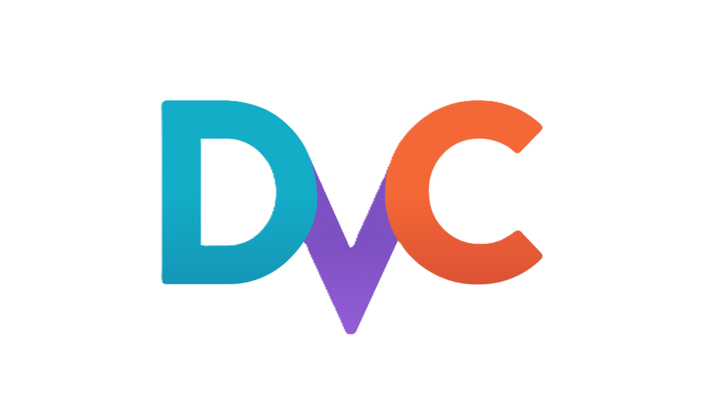
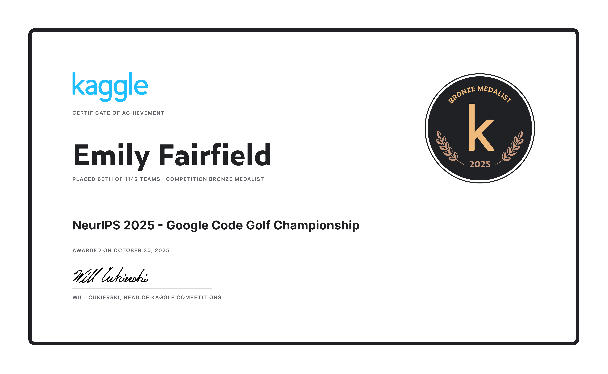

Emily Fairfield
Data Scientist




I’m a data scientist with 9+ years of experience turning complex data into clear results in both the healthcare & defense sectors. At the U.S. Air Force, I paired technical depth with consulting skills to boost F-15 fleet availability by ~600 days per year. I also built a multithreaded data translator for Special Operations aircraft, which, compared to the previous system, ran 10× faster, processed 6× more data, and cut output size by 13×. This enabled real-time aircraft health monitoring. My work earned recognition such as Junior Engineer of the Year (2022).
I hold an M.S. in Computer Science (Machine Learning) and a B.S. in Industrial & Systems Engineering from Georgia Tech, plus an MBA from Kennesaw State. I work across Python, PyTorch, scikit-learn, Dask, SQL, and the modern data stack. I value reproducible experiments, clear communication, and collaboration that helps teams act on insights.
To see these skills in action, explore a sample of my personal coding projects below.
Flair + PubMedBERT model trained on the NCBI Disease Corpus to highlight disease mentions in scientific text.
Launch 🤗 Hugging Face DemoBuilt, trained, tuned, & tested a CNN to classify images from the CIFAR-10 dataset.
Learn More
Solved 400 grid transformation problems using minimal Python characters. Experimented with LLM code generation.
Learn MoreA tool to create a minimum-cost cut list from a bill of materials & list of stock boards available for purchase.
Learn MoreQ-learning stock trading agent with out-of-sample returns of 1.23 using five technical indicators & a lookback optimizer. (School copyright prohibits public repo, but can demo during interviews.)
Learn MoreInverted all pixels of a directory of images using nested for loops, vectorization, & multithreaded vectorization.
Learn More